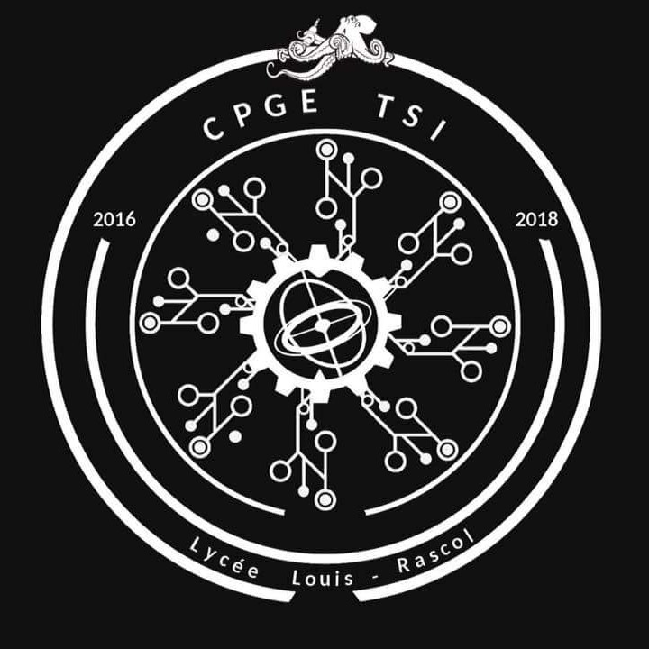

Steven Lamerly
Gameplay & Tools Programmer
Profile
Gameplay & Tools programmer focused on clear player experience, robust production pipelines, and practical collaboration with design and production teams.

I grew up around computers and naturally developed a deep interest in video games and software. After computer science studies and a game development specialization, I built a profile combining technical rigor with a strong product mindset.
Professional Value
I turn design intent into reliable gameplay systems and production tools that improve team efficiency. My approach combines listening, analysis, and adaptability to deliver tailored technical solutions for multidisciplinary environments.
- Gameplay Systems
- Tools Development
- Performance Mindset
- Cross-discipline Communication
- Problem Solving
- Agile Collaboration
Leadership & Project Management
Across scouting, competitive rowing, academic projects, and my graduation production, I led teams in demanding contexts. These experiences shaped a structured leadership style based on communication, risk anticipation, and consistent execution.
- Scouting: Leadership, autonomy, resilience, team responsibility.
- Competitive Rowing: Discipline, long-term progression, group performance.
- IUT Informatique & ARTFX: Project planning, technical communication, delivery focus.
- Graduation Project: Large-team coordination, agile methods, risk and crisis management.
Interests
Outside of production, I cultivate several interests that bring balance to my technical profile. Click on a tile to explore.
Video Games
From strategy to simulation, I enjoy analyzing complex systems, game feel, and player expectations.
Passionate since my childhood, I closely followed the evolution of the industry: from my first Lego games to the strategy of Age of Empires, the creativity of Minecraft, space simulation in X4: Foundations, or shooters like Quake. I explore a wide variety of genres to enrich my vision of gameplay mechanics.
- Complex Systems
- Game Feel & UX
- Industry Culture
Scouting & Travel
Eight years of scouting and regular travel developed my adaptability and ease within new environments.
Scouting (EEDF and GSE) built core values: community living, independence, resilience, and team spirit. In parallel, travels from California to Sweden, or Spain to the Seychelles, shaped my open-mindedness and adaptability within any team dynamic.
- Team Spirit
- Resilience
- Adaptability
Music & Sports
Playing group music and practicing sports foster my steady focus, coordination, and team spirit.
I play the drums and bass as an amateur, which developed my rhythmic sensitivity, coordination, and listening skills. On the sports side, competitive rowing and judo taught me discipline and self-improvement. Naturally curious, I also tried more demanding activities like paragliding, an excellent exercise in stress management and decision-making.
- Coordination
- Discipline
- Team Spirit
Science Fiction & Fantasy
Passionate about Space Opera, sci-fi, and fantasy, I have a soft spot for faction stories, complex narratives, and worlds built with a solid attention to detail.
My creative references were forged through literature (Asimov's Foundation cycle, Elfes comics, Warhammer Black Library novels) and key cinematics (Star Wars, Star Trek, Legend of the Galactic Heroes). It heavily shapes my narrative game preferences, such as Mass Effect, the classic Warcraft III, or Rogue Trader.
- Grand Space Opera
- Narrative games
- Strategy games